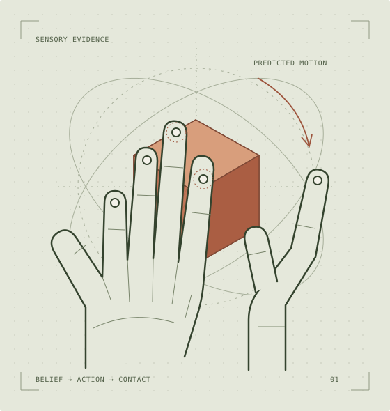
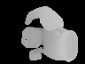

AN EXPERIMENT IN EMBODIED LEARNING
A sense of touch.
A model of
what’s next.
Learning dexterous control with SuperMimic, informed by a recurrent visuotactile context prior.

One hand. One object. A complete learning loop.
SHARPA / Z-AXIS ROTATION01 / THE APPROACH
From knowing
to doing.
A model that understands the present does not necessarily know how to improve the next action.
UnionMimic studies that gap with two distinct models. SuperMimic learns physical dynamics for policy training; WM-Craftnet supplies recurrent context from depth, touch and action history.
The first comparison trains SM policies from scratch, with and without the context prior. We measure precision, rotation progress, failures and complete learning cost in physics.
Inside the architectureSM DYNAMICS / WSM CONTEXT
Observe. Imagine. Improve.
Interact
Depth, touch and joint state from the physical simulator.
REAL OBSERVATIONSObserve
The WSM updates policy context using sensor and action history.
POSTERIOR UPDATEImagine
SM predicts physics; a defined observation bridge updates imagined context.
NO FUTURE SENSORSImprove
Predicted return carries a gradient back to the actor.
POLICY UPDATEUpdated policy → physical evaluation → fresh observations ↵
Let the world correct the model.
Real depth, touch, and joint history update the recurrent belief. This observation path is part of the verified original-policy replay.
Model parameters stay fixed during actor updates. Gradients flow through the learned dynamics, never through the simulator.
02 / RESEARCH NOTES
Questions worth
building around.
A focused adaptation today.
A foundation for further experiments.
A good state estimate is only the beginning.
Separate observation quality, open-loop prediction, and the usefulness of model gradients.
The interface is part of the method.
Align actions, controller memory, sensor history and resets before learning through them.
Count the whole learning loop.
Compare SM with and without a pretrained context prior, including fitting, bridging and evaluation costs.
03 / RECORDED EVIDENCE
Start with
something real.
The original sensing and control stack passed a single-V100 runtime check. The new question is whether a recurrent context prior improves SM-trained control precision.
Read the acceptance recordORIGINAL POLICY REPLAY
36.13 sRecorded replay + checks
1 × V100Single simulation environment

Recorded depth sample · 72 × 96
Five fingertip contact channels also verified.
Runtime acceptance only. No full-episode success rate or PPO/SM speedup is established. Model and policy parameters remained unchanged during this replay.
04 / PROJECT PROGRESS
A clear path
to evidence.
First: an SM baseline for one object. Then: frozen WSM context, a precision/cost comparison and a reproducible release.
Documentation snapshot · 9 November 2026
Acceptance evidence, not a live job monitor.
- 01Verified
Restore the original system
Physics, sensing, checkpoint and policy replay.
- 02In progress
Reproduce SM learning
Verified: from-scratch Sharpa single-object rotation. Matched PPO speed remains under evaluation.
- 03Planned
Add recurrent context
Frozen WSM, trainable projection and consistent imagined context.
- 04Planned
Compare in physics
Paired SM / SM+prior runs, precision, cost and failure analysis.
BUILT ON OPEN RESEARCH
Two ideas.
A shared direction.
Visuotactile recurrent context, task assets and pretrained WSM weights.
02 / LEARNINGSuperMimic ↗Policy optimization through short rollouts of a learned world model.
Independent adaptation. Upstream authors retain credit for their methods and assets.